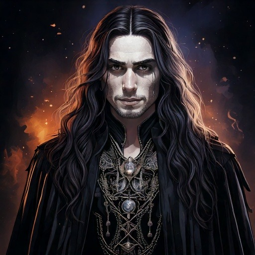

Sebastian
Refinado, estratégico e fiel à ordem. Sebastian foi abraçado por Beatriz, uma Condessa Ventrue, após uma noite chuvosa marcada por teatro, vinho e destino. Vive há mais de cem anos em Belo Horizonte, mantendo a estrutura social da Camarilla com pulso firme.
Geração: 13ª
Abraço: Belo Horizonte, década de 1920
Especialidade: Política, influência social e diplomacia entre feudos